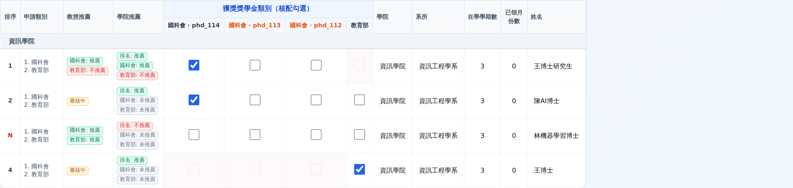
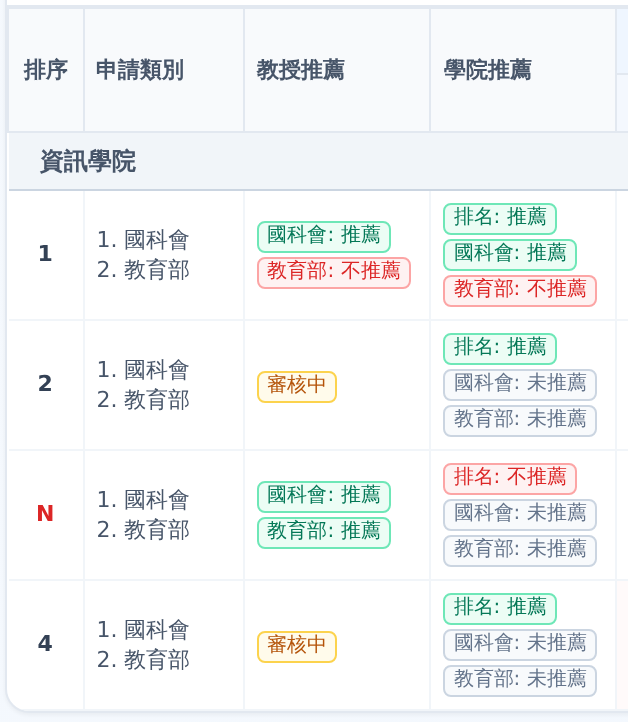
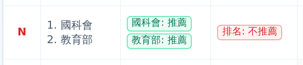
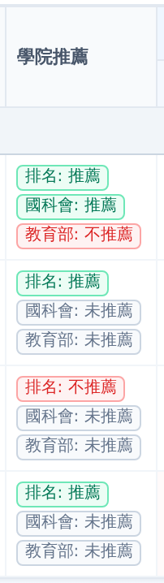

Evidence for PR feat/manual-dist-recommendation-columns (feature commit
01be677d): the admin 手動分發 grid gains 教授推薦 and 學院推薦 columns. Playwright spec frontend/e2e/specs/manual-dist-recommendation-columns.spec.ts passed green twice consecutively against the worktree dev stack; see
01-manual-dist-recommendation/REPORT.md for the scenario matrix and the five assertion groups.
Feature (branch feat/manual-dist-recommendation-columns, commit 01be677d): two new columns on the admin 手動分發 grid, between 申請類別 and the 核配 checkbox group.
(國科會: 推薦 emerald / 教育部: 不推薦 red, reviewer comment in chip title); amber 審核中 when the config requires a professor recommendation but no professor review exists; — when there is no professor step.
排名: 推薦 emerald, or 排名: 不推薦 red when the ranking item is college_rejected — the 排序 cell then shows a red N), followed by ONE chip per applied sub-type: 推薦 / 不推薦 from college-role review items, or gray 未推薦 when the college gave no verdict for that sub-type (nothing is silently omitted).
getSubTypeShortName: nstc→國科會, moe_1w→教育部.frontend/e2e/specs/manual-dist-recommendation-columns.spec.tscd frontend NODE_PATH=/home/howard/scholarship-system/frontend/node_modules \ /home/howard/scholarship-system/frontend/node_modules/.bin/playwright test \ e2e/specs/manual-dist-recommendation-columns.spec.ts --reporter=line
(See "Deviation" — the plain npx playwright test form breaks the running dev container; Playwright is resolved from main's node_modules via NODE_PATH instead of a frontend/node_modules symlink.)
Four ranked applications (all college C, scholarship phd / config 5 / 114 全年, review_stage college_ranked, status submitted, sub-types ["nstc","moe_1w"]) plus one finalized college_rankings row (college_code C, is_finalized true) with rank-1..4 items; App3's item college_rejected=true.
| # | student | rank | reviews | expectation |
|---|---|---|---|---|
| App1 | csphd0001 王博士研究生 | 1 | professor partial_approve (nstc approve, moe_1w reject "名額有限…") + college partial (nstc approve, moe_1w reject "學院不推薦教育部方案") | 教授: 國科會:推薦 + 教育部:不推薦 · 學院: 排名:推薦 + 國科會:推薦 + 教育部:不推薦 |
| App2 | csphd0002 陳AI博士 | 2 | none | 教授: 審核中 · 學院: 排名:推薦 + 國科會:未推薦 + 教育部:未推薦 |
| App3 | csphd0003 林機器學習博士 | 3 (N) | professor approve (nstc + moe_1w); item college_rejected | 排序 red N · 學院: 排名:不推薦 + 兩者未推薦 · 教授: 國科會:推薦 + 教育部:推薦 |
| App4 | stuphd001 王博士 (renewal) | 4 | ADMIN reject (nstc, "admin 審查不應顯示") | 教授: 審核中 · admin comment nowhere · 學院: nstc 未推薦 (NOT 不推薦) + 教育部:未推薦 |
1. Headers 教授推薦 and 學院推薦 exist. 2. App1: 教授推薦 has 國科會: 推薦 + 教育部: 不推薦 (reject chip title = comment
名額有限，僅推薦國科會); 學院推薦 has 排名: 推薦, 國科會: 推薦 AND
教育部: 不推薦 (title = 學院不推薦教育部方案). 3. App2: 教授推薦 審核中; 學院推薦 排名: 推薦 + 國科會: 未推薦 + 教育部: 未推薦. 4. App3: 排序 red N; 學院推薦 排名: 不推薦 (no approve ranking chip) + both 未推薦; 教授推薦 both 國科會: 推薦 and 教育部: 推薦. 5. App4: 教授推薦 審核中; admin 審查不應顯示 appears nowhere (admin exclusion); neither column has a 不推薦 chip — the admin-rejected nstc renders 未推薦.
The suggested ln -s …/frontend/node_modules … symlink leaks into the frontend container's /app bind mount and crashes Turbopack ("Symlink node_modules is invalid, it points out of the filesystem root"), restart-looping the container. Root cause: this compose project masks /app/node_modules with an anonymous volume (not a bind of main's node_modules), so the host mountpoint must stay a plain directory. Fix: frontend/ node_modules restored to an empty directory, frontend container restarted (recovered, HTTP 200), and Playwright resolved from main's node_modules via NODE_PATH — no symlink, container healthy. Seed purged in afterAll. No product bug found.



